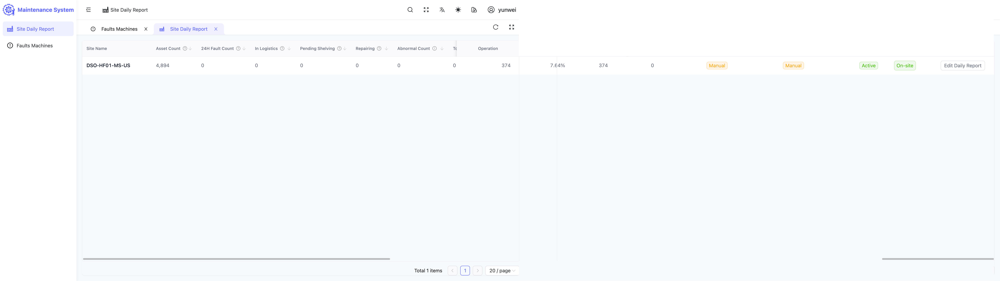
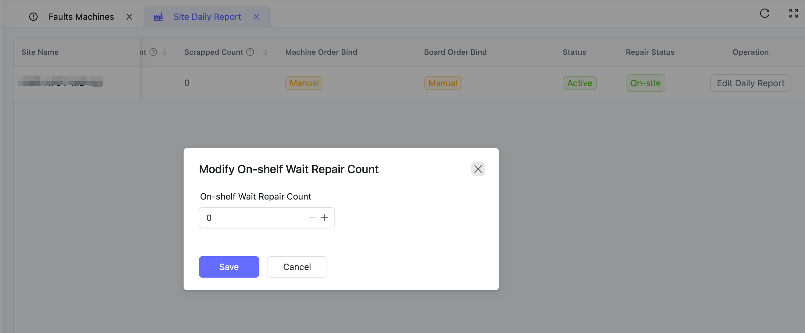
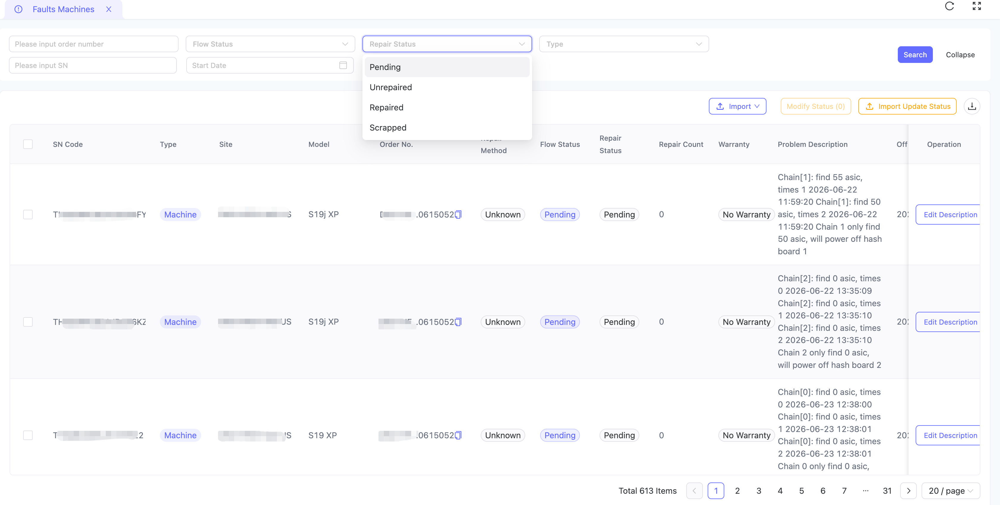
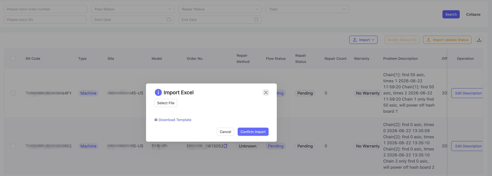
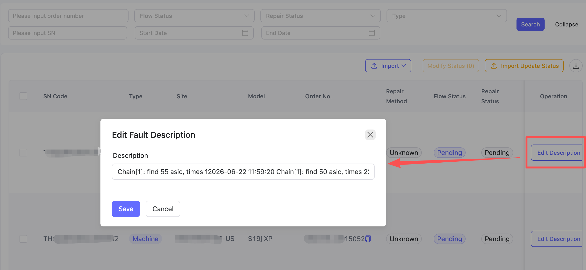
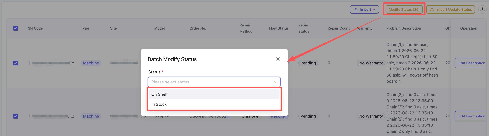

Permissions:Operations accounts only display the "Mining Site Daily Report" and "Fault Machine Management" menus, responsible for mining site fault reporting, status updates, and daily report maintenance.
View the daily operational data of responsible mining sites and maintain the on-shelf pending repair count.

| Field | Description |
|---|---|
| Asset Count | Total hash boards / miners at the site |
| 24H Fault Count | Faulty equipment taken off-shelf in the last 24 hours |
| In Logistics | Equipment in transit to repair station |
| Pending Shelf | Repaired equipment pending on-shelf |
| Under Repair | Equipment currently being repaired at the station |
| Pending Repair / Rate | Count and ratio of on-shelf equipment pending repair |

It is recommended to update once during the morning shift handover to ensure data accuracy.
Core working module: faulty equipment entry, status updates, and fault description maintenance.

Click "Expand" to show full filter options: Work Order No, Flow Status, Repair Status, Type, Machine SN, Time Range. Click "Query" after setting.
Supports "Miner Import" and "Hash Board Import" types:

Click "Import", select Miner or Hash Board import
Click "Download Template" to get the Excel template
Fill in SN, Model, Fault Description, Off-shelf Time per template
Select file and click "Confirm Import"
Note:SN code is the unique identifier of the equipment, make sure it is filled in accurately; fault description should clearly state specific symptoms (such as which board is not working, error codes) to facilitate repair.

When a single device description needs to be supplemented, click "Modify Description" on the right, edit the content and save.

| Scenario | Target Status |
|---|---|
| Faulty equipment packed and sent to repair station | Logistics Out |
| Received equipment sent back from repair station | Logistics In |
| Equipment inspection complete, confirmed for scrap | Pending Warehousing |
| Scrap equipment confirmed and warehoused | Warehoused |
| Equipment inspection complete, ready for on-shelf | Pending Shelf |
| Equipment re-shelved and running normally | On Shelf |
Operation: Select equipment → Click "Modify Status" → Select target status → Click "Submit". For large quantities, you can also use "Import Update Status" for batch processing.
Click the download icon in the upper right corner to export the current filtered results as an Excel file for local inventory.
A: Operations accounts only have access to Mining Site Daily Report and Fault Machine Management; other features require the corresponding role.
A: Check if the Excel format matches the template, if SN is duplicated/wrong, and if all required fields are filled.
A: Select equipment → Modify Status → Select "Logistics Out" and submit.
A: Operations accounts do not have delete permission, contact the administrator, or modify the description to mark as voided.